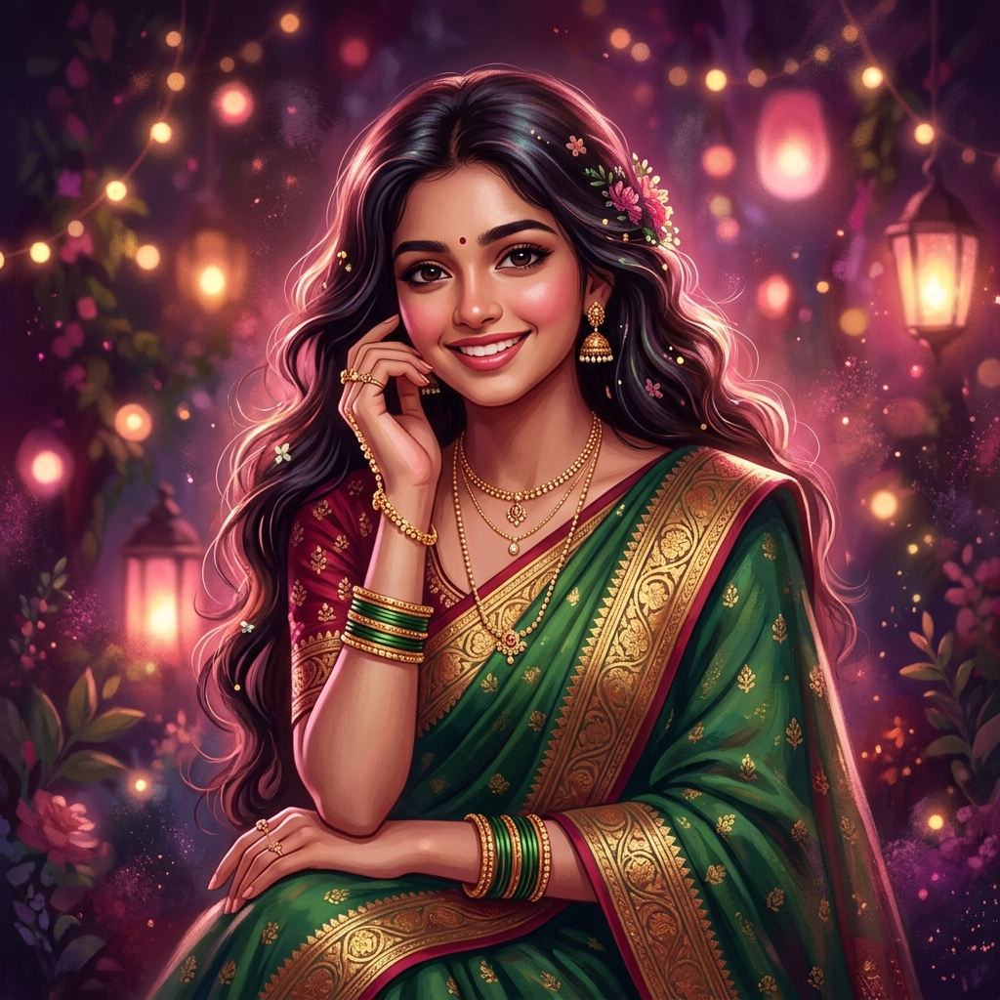

Loading Love...
A Song From My Heart To Yours
Anushka
I never asked you to love me.
I only wished to stay somewhere in your world.
This is just what I felt, honestly and quietly.
Scroll Down
Someone Special
About Her

Anushka
You became a part of my daily life before I even realized it. When we started talking more after the Class 10 results, those long conversations felt like the most normal and comforting part of my day.
You are sometimes kind, sometimes distant, and sometimes hard to understand. But I never hated you. I just learned to accept you exactly as you are, loving you silently and patiently.
Her Special Day
Birthday Countdown
Anushka
Born: 3rd January 2008
Every year your birthday comes,
but this time I wanted to give you something
that came from my heart.
From My Heart
A Love Letter
April 2026
My Dearest Anushka,
With all my love, forever & always,
— Swapnadip 💕
Silent Truths
Why I Love You
Casual Talks
I love the way you talk casually, like nothing matters. Those simple, everyday conversations felt more real to me than anything else.
Your Laughter
I love the way you laugh without thinking too much. It’s one of those small, imperfect things that just stayed in my memory.
Staying in My Thoughts
Even on the days you completely ignored me, somehow you still stayed in my thoughts. It was strange, but true.
Your Presence
Just seeing you walking around the gym or crossing the road. The most ordinary moments were the ones that mattered the most.
Small Imperfections
I didn't fall for a fantasy. I fell for a real person with moods, silence, and distance. I loved the real you.
Quiet Patience
The way time seemed to slow down just a bit when you were around. I never needed you to notice me for it to happen.
Being Yourself
You never tried to be anyone else. Whether you were kind or distant, you were just Anushka. And that was enough.
No Reason Why
I don't know why I love you. If someone asks me the reason, I still don't have a perfect answer. I just do.
Words of Love
Love Quotes For You
I never wanted to have you. I just wanted to keep seeing you.
Even if you never choose me, I'll still choose you.
If you ever come back someday, I'll still be there.
I don't know why I love you. If someone asks me the reason, I still don't have an answer. I just do.
I never asked you to love me. I only wished to stay somewhere in your world.
Our Journey
Our Story
The Day I Noticed You — And Never Really Forgot
I first saw you standing in front of Ayan sir's batch. It was just a normal day for everyone else, but something quietly stayed in my memory. It wasn't love immediately—just a quiet feeling that simply remained with me.
When Conversations Became Part of My Everyday Life
We started talking more after the Class 10 results. The conversations slowly became longer, and talking to you just became a normal part of my days. Without me even realizing it, you became a comforting part of my daily routine.
The Day I Finally Said What I Was Afraid To Say
I gathered the courage to tell you how I felt. It wasn't done perfectly, but it was honest. Unfortunately, misunderstandings happened, and a quiet distance slowly began to grow between us after that.
One Evening That Felt Quieter Than Usual
You and the others went to eat fuchka together, and I wasn't called. I just sat quietly on the opposite side of the road. I didn't have any dramatic reaction; it was just a quiet moment of realizing how alone I felt.
The Only Place Where I Could Still See You
The gym became my daily routine. It wasn't because of fitness, but because it became the only place where I could still see you. Seeing you from a distance became a part of my day, and even without any conversation, those moments truly mattered to me.
The Day Silence Became Too Heavy
You told me not to look at you like that. I stayed silent. Later, I sat quietly and covered my face with a towel so no one would notice. Inside, the same questions kept repeating:
"Has it really become so wrong just to look at you? Did I do something so bad to deserve this distance?"
I slowly realized that maybe I care more than you ever did. Maybe I truly became an unwanted person in your world.
I love her — and maybe she doesn't love me. It's that simple.
Swapnadip Sings For You
A Song For You
The Words I Couldn't Say Out Loud
Swapnadip Ghosh — Written on the days I couldn't speak
🎵 You were never just someone I saw...
You became someone I waited to see.
Not because you called me,
But because seeing you
was enough to make my day feel complete.
I learned to stand quietly,
to look without being noticed,
to smile even when my chest felt heavy.
Because loving you was never loud...
It was silent, patient, and real.
Maybe you never noticed
how many times I stayed back
just to see you one more moment.
Maybe you never knew
how much courage it took just to stand there.
Even on the days I felt unwanted,
Even on the days I walked away quietly,
My heart still chose you...
again, and again.
And even if one day you forget me,
These moments will still remain inside me.
Because some feelings
are not meant to be returned...
They are meant to be remembered.
A Quiet Truth
শুধু তোকে দেখেই যেতে চেয়েছি—
I never loved you just to call you mine,
I never wanted to possess you.
I only wanted to see you, hear your voice,
And quietly watch you smile.
People often ask me for reasons,
But I never had a perfect answer.
I never knew why I loved you so much,
I just loved you, without any explanation.
Even if you never stay beside me,
I will still care for you quietly.
Even if you never understand my feelings,
I could never bring myself to hate you.
And if life ever brings you back someday,
I will still accept you, without a single question.
I learned to love without any expectation.
To wait for you without forcing anything.
My feelings simply stayed true in the silence.
তোকে পাওয়াই আমার ভালোবাসা ছিল না,
তোকে ভালোবাসাটাই ছিল আমার পাওয়া।
Things I Never Said
Anushka,
It was always so difficult for me to express my feelings face to face. Whenever I tried, the words just stayed locked inside my chest.
I often stayed completely silent, even on the days when I really wanted to speak to you.
The fear of losing whatever small connection we had made me quiet. Over time, loving you silently just became normal for me.
I kept it all inside, quietly.
— Swapnadip Ghosh
Silent Thoughts
If You Never Read This
Even if you never understand my feelings, I want you to know that the love was still real. Even if you never read this, I don't regret loving you.
This website was not made to force you or make you feel guilty. It was made simply to release the emotions I couldn't hold inside anymore.
Loving you changed me, even if nothing came from it. And I have accepted that.
With silent strength
Before I Leave
One Last Choice
This website carries memories that mattered to me.
But memories only stay if they are allowed to.
You stayed till the end.
If this story doesn't belong in your life,
I'll let it fade quietly.
Not because it didn't matter,
but because loving you
was never about forcing you to stay.
Some stories don't last forever,
but they still remain real.
Some stories don't need an ending…
just a moment.